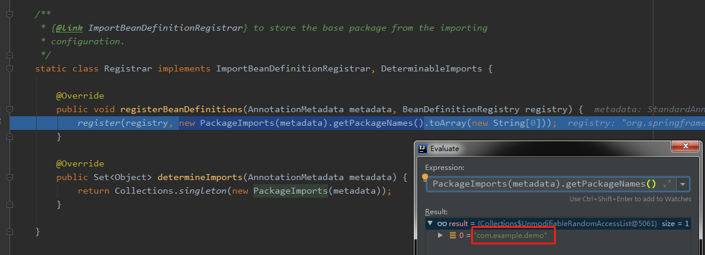
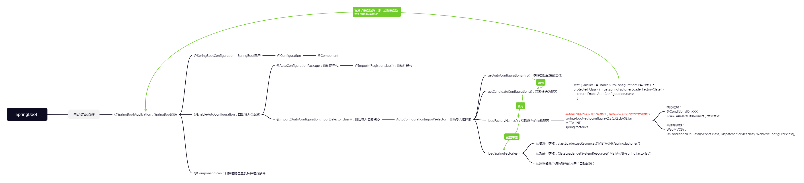
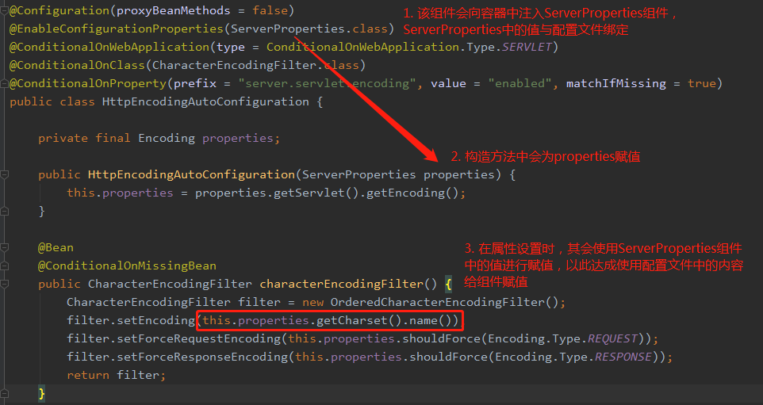

自动配置原理入门 1. 注解 @SpringBootApplication相当于
@SpringBootConfiguration + @EnableAutoConfiguration + @ComponentScan
1 2 3 4 5 6 @SpringBootConfiguration @EnableAutoConfiguration @ComponentScan
1.1 @SpringBootConfiguration 相当于@Configuration，表示当前是一个配置类
1.2 @ComponentScan 指定要扫描那些包
1.3 @EnableAutoConfiguration 核心注解
启动时加载所有的场景的自动配置，最终按照条件（@Conditional）装配规则，按需配置
1.3.1 @AutoConfigurationPackage 1 2 3 4 5 @Import(AutoConfigurationPackages.Registrar.class)

1.3.2 @Import(AutoConfigurationImportSelector.class) 加载所有的场景
使用Selector给容器中批量导入主要为实现了DeferredImportSelector 接口的 selectImports 方法
selectImports 方法中主要为调用 getAutoConfigurationEntry
getAutoConfigurationEntry中主要通过getCandidateConfigurations方法加载所有的组件
getCandidateConfigurations中通过SpringFactoriesLoader加载所有的组件
在SpringFactoriesLoader中的Map<String, List<String>> loadSpringFactories(ClassLoader classLoader)
方法中会加载所有的META-INF下的spring.factories文件
最主要的就是spring-boot-autoconfigure-2.5.2.jar包下的META-INF/spring.factories文件
打开META-INF/spring.factories文件，其中以# Auto Configure标明自动注入的组件都有哪些
思维导图：
原导图地址：https://www.processon.com/mindmap/60c9c9d107912975024b848c

实例分析 @ConditionalOnProperty注解
1 2 3 4 5 6 7 8 9 10 11 12 13 14 15 16 17 18 19 20 21 22 23 24 25 26 27 28 29 30 31 32 33 34 35 36 37 38 39 40 41 42 43 44 45 @Configuration(proxyBeanMethods = false) @ConditionalOnProperty(prefix = "spring.aop ", name = "auto", havingValue = "true", matchIfMissing = true) public class AopAutoConfiguration @Configuration(proxyBeanMethods = false) @ConditionalOnClass(Advice.class) static class AspectJAutoProxyingConfiguration @Configuration(proxyBeanMethods = false) @EnableAspectJAutoProxy(proxyTargetClass = false) @ConditionalOnProperty(prefix = "spring.aop", name = "proxy-target-class", havingValue = "false") static class JdkDynamicAutoProxyConfiguration } @Configuration(proxyBeanMethods = false) @EnableAspectJAutoProxy(proxyTargetClass = true) @ConditionalOnProperty(prefix = "spring.aop", name = "proxy-target-class", havingValue = "true", matchIfMissing = true) static class CglibAutoProxyConfiguration } } @Configuration(proxyBeanMethods = false) @ConditionalOnMissingClass("org.aspectj.weaver.Advice") @ConditionalOnProperty(prefix = "spring.aop", name = "proxy-target-class", havingValue = "true", matchIfMissing = true) static class ClassProxyingConfiguration @Bean static BeanFactoryPostProcessor forceAutoProxyCreatorToUseClassProxying () return (beanFactory) -> { if (beanFactory instanceof BeanDefinitionRegistry) { BeanDefinitionRegistry registry = (BeanDefinitionRegistry) beanFactory; AopConfigUtils.registerAutoProxyCreatorIfNecessary(registry); AopConfigUtils.forceAutoProxyCreatorToUseClassProxying(registry); } }; } } }
文件上传解析器 - 重命名用户配置的文件上传解析器
1 2 3 4 5 6 7 8 9 10 11 12 13 @Bean @ConditionalOnBean(MultipartResolver.class) @ConditionalOnMissingBean(name = "multipartResolver") public MultipartResolver multipartResolver (MultipartResolver resolver) return resolver; }
SpringBoot默认会在底层配置好所有的组件，但是如果用户自己配置了以用户的优先
1 2 3 4 5 6 @Bean @ConditionalOnMissingBean public CharacterEncodingFilter characterEncodingFilter () ... }
配置文件如何控制组件中的配置

总结：
SpringBoot先加载所有配置类
每个自动配置类按照条件进行生效，默认都会绑定配置文件指定的值，都会从xxxProperties里边获取，xxxProperties和配置文件进行了绑定
生效的配置类就会给容器中装配很多组件
只要容器中有这些组件，相当于这些功能就有了
只要用户有自己配置的，就以用户的优先
用户直接自己@Bean替换底层的组件
用户去看这个组件是获取的配置文件的什么值，就去设置什么值即可
xxxAutoConfiguration –> 组件 –> xxxProperties里边拿值 –> application.properties/yml